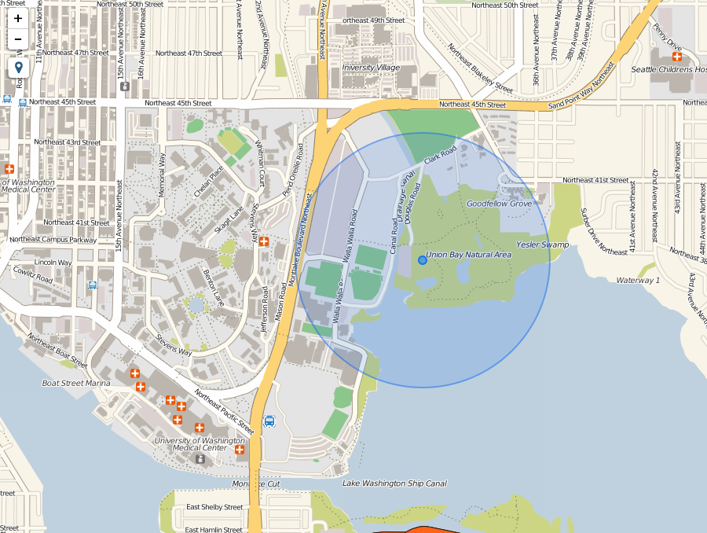

Note
| Fecha | Autores |
|---|---|
| 14 Febrero 2017 |
|
©2017 Wladimir Szczerban
Excepto donde quede reflejado de otra manera, la presente documentación se halla bajo licencia: Creative Commons (Creative Commons - Attribution - Share Alike: http://creativecommons.org/licenses/by-sa/3.0/deed.es)
Añadiremos a nuestro mapa un control que permite la geolocalización del usuario, para ello utilizaremos el plugin de Leaflet Leaflet.Locate [1].
Agregar las hojas de estilo. En el head de nuestra página agregar las hojas de estilo, justo debajo de la hoja de estilo del Leaflet. Este plugin hace uso del conjunto de iconos fontawesome [2] por lo tanto también debemos cargar la hoja de estilo de fontawesome. Para ello copiar los siguiente:
<link rel="stylesheet" href="//maxcdn.bootstrapcdn.com/font-awesome/4.5.0/css/font-awesome.min.css">
<link rel="stylesheet" href="https://cdn.jsdelivr.net/leaflet.locatecontrol/0.60.0/L.Control.Locate.min.css" />
Agregar la librería javascript del plugin. Al final de nuestra página debemos añadir la librería justo debajo de donde incluimos la librería de Leaflet. Para ellos escribimos lo siguiente:
<script src="https://cdn.jsdelivr.net/leaflet.locatecontrol/0.60.0/L.Control.Locate.min.js" charset="utf-8"></script>
Inicializar el plugin. En el apartado de javascript de nuestra página luego de la declaración del objeto mapa agregamos:
L.control.locate().addTo(map);
Abrir el navegador y ver que nos aparece un nuevo control en el mapa.
http://localhost:81/visor/movil.html
Al presionar sobre el control nos aparece un mensaje del navegador preguntando si queremos compartir nuestra ubicación. Seleccionamos la opción de compartir y nuestra aplicación debe mostrar nuestra posición en el mapa.

| [1] | https://github.com/domoritz/leaflet-locatecontrol |
| [2] | http://fontawesome.io/ |